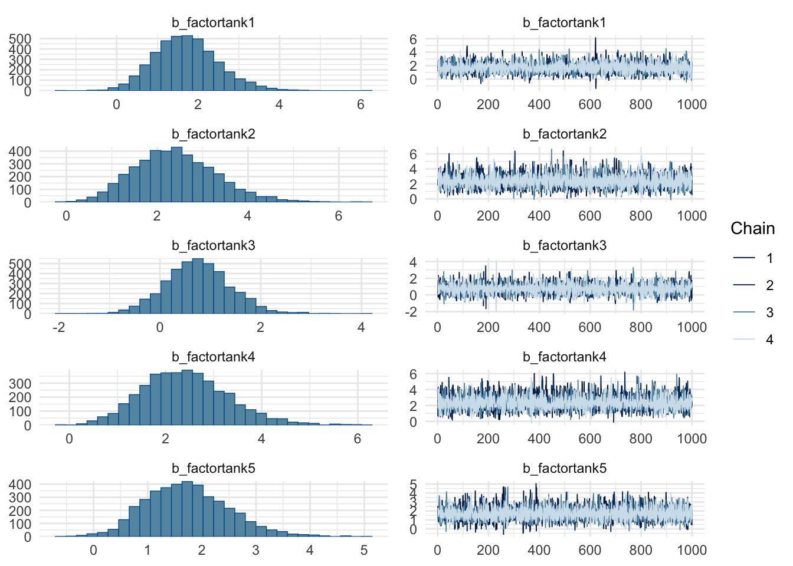
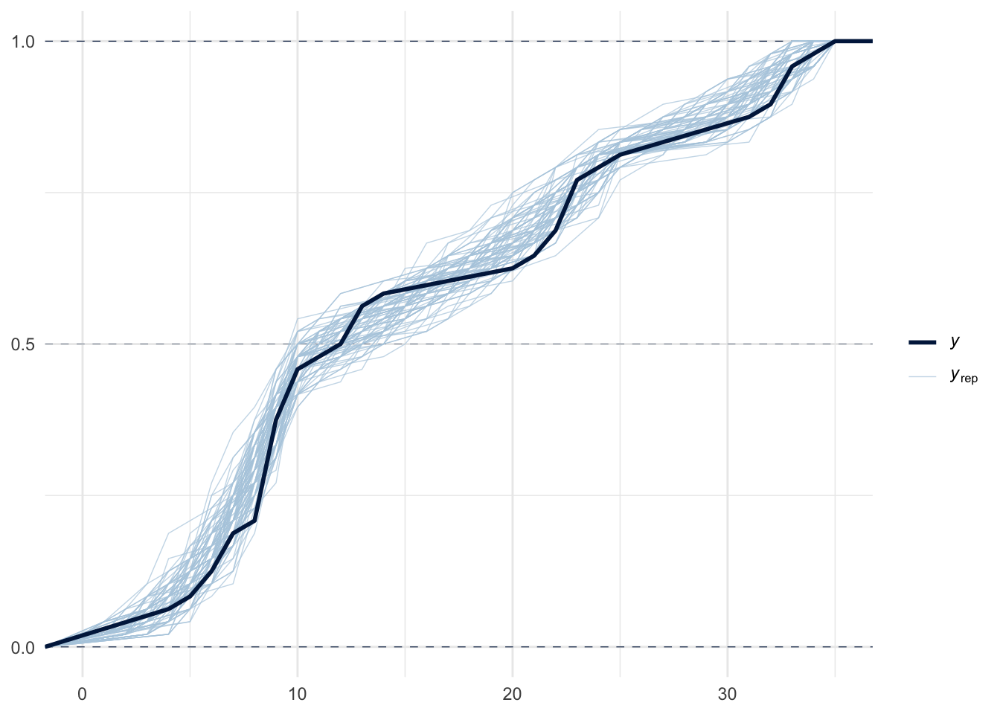
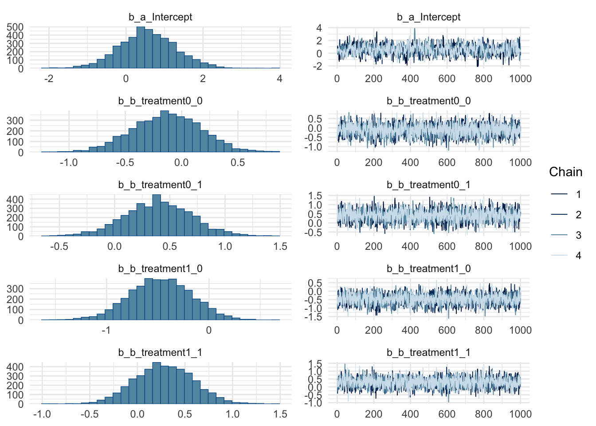
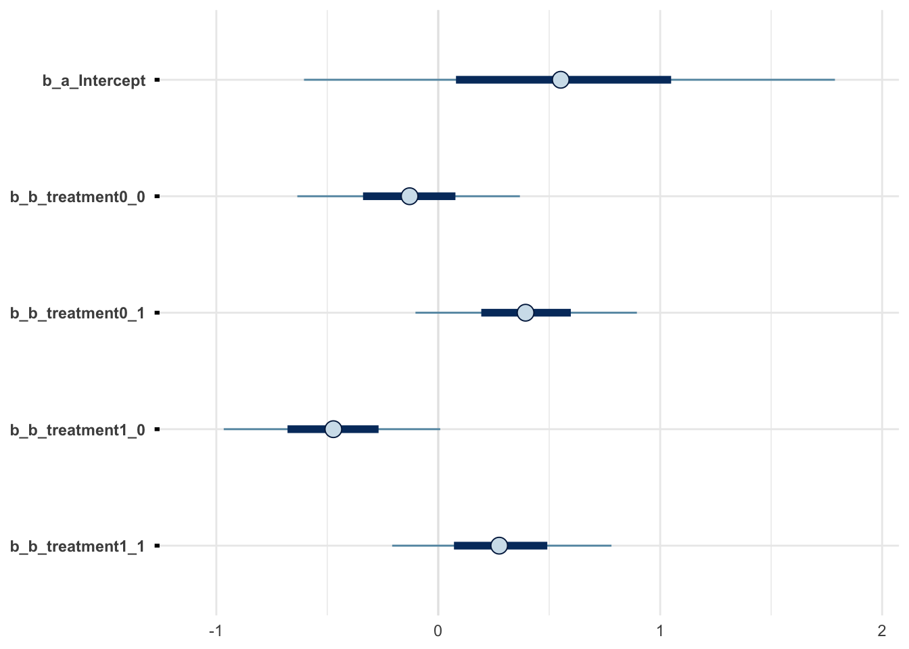
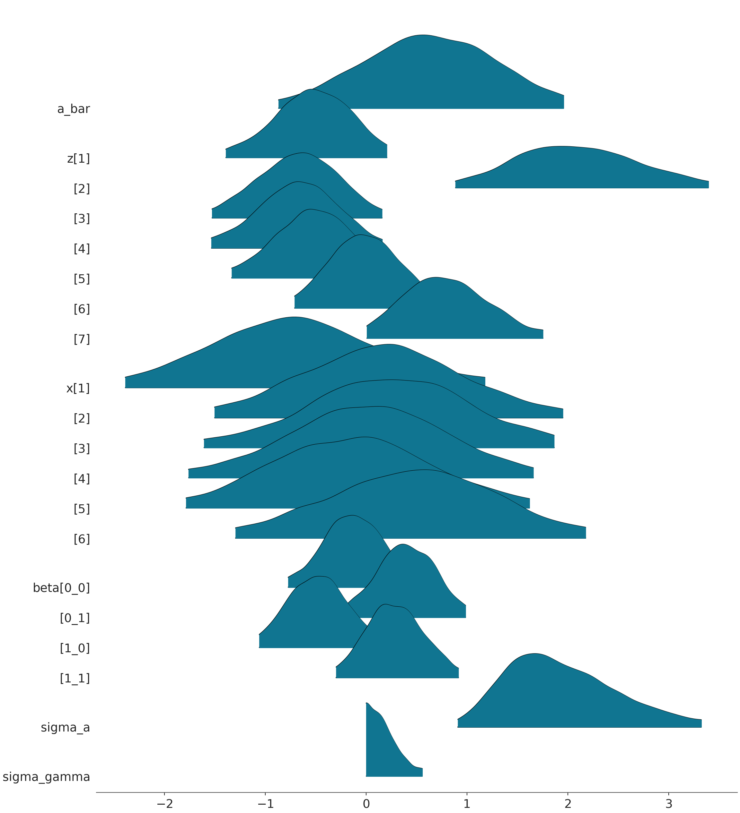
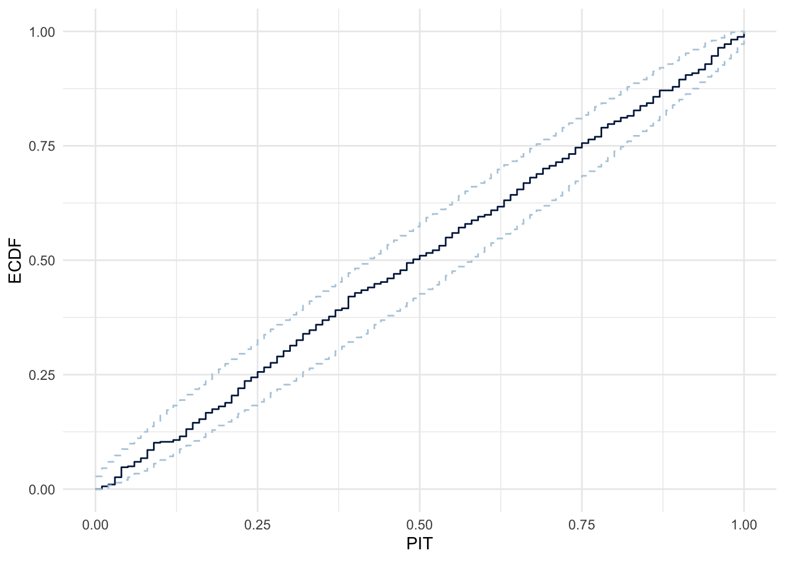

set.seed(51)
library(tidyverse)
library(ggplot2)
library(brms)
library(here)
library(bayesplot)
library(tidybayes)
theme_set(theme_minimal())Hierarchical modeling with PyMC and brms
NoteTLDR
To bridge the gap between R-based research and Python-based deployment, I compared an end-to-end Bayesian workflow using PyMC + ArviZ against the brms + tidybayes + ggplot2 stack. To make my examples concrete, I utilized the reedfrog and chimpanzee examples from McElreath’s Statistical Rethinking.
Certain things stood out to me:
brmsabstracts away the “boilerplate” (e.g., dummy coding, index variables, non-centered parameterization) that one still needs to implement manually inPyMC.
- Nevertheless,
PyMCforces users to explicitly define the data generating process starting from the hyperpriors, and shares a closer resemblance to the underlying mathematical equations of the model.brmson the other hand, folds a lot of writing intos its formula, which could take a while to get used to, and does not make the process of specifying priors easy.PyMCalso makes specifying multilevel models easier. arvizintroduces a more sematic way of handling data (viaxarrayandInferenceData), but theRecosystem remains the superior option for visualizing data in tidy format. Grammar of Graphics makes the process of creating custom prior and posterior plots intuitive.arvizis also currently undergoing some refactoring changes (per this article), and some of the plotting functions don’t quite produce the results that those who are familiar withbayesplotwould expect them to look like. So technically one also need to look intoarviz-plotsin addition to the basearviz.plotnine, while powerful and uses grammar of graphics, does not supporttidybayesgeoms as of now.
All this is to say, for a researcher used to R’s high-level abstractions, the Python transition currently feels very painful — the potential for production integration is definitely there1, but the developer experience is significantly more high-friction.
1 e.g., via pymc.ModelBuilder
Tadpole survival
We will use the tadpole survival in ponds dataset used in McElreath’s Statistical Rethinking textbook. The reedfrogs.csv is obtained from here. One can follow along the original textbook starting from Chapter 13.1 Example: Multilevel tadpoles.
First we load the necessary libraries and data:
df <- read.csv2(here("posts", "pymc-hierarchical", "reedfrogs.csv")) %>% as_tibble(.)
df %>% head(5)# A tibble: 5 × 5
density pred size surv propsurv
<int> <chr> <chr> <int> <chr>
1 10 no big 9 0.9
2 10 no big 10 1
3 10 no big 7 0.7
4 10 no big 10 1
5 10 no small 9 0.9 import pandas as pd
import os
os.environ["PYTENSOR_FLAGS"] = "cxx="
import pymc as pm
import pytensor
import arviz as az
import arviz_plots as azp
from pyprojroot.here import here
az.style.use("arviz-docgrid")df = pd.read_csv(here("posts/pymc-hierarchical/reedfrogs.csv"), delimiter=";")
df.head(5) density pred size surv propsurv
0 10 no big 9 0.9
1 10 no big 10 1.0
2 10 no big 7 0.7
3 10 no big 10 1.0
4 10 no small 9 0.9We will focus on the number surviving (surv) out of an intial count (density).
No pooling
Tip
Note that for this particular example, each row is its own tank.
Math model:
\[ \begin{align} \texttt{surv}_i &\sim \text{Binomial}(\texttt{density}_i, p_i) \\ \text{logit}(p_i) &= \alpha_{\text{TANK}[i]} \\ \alpha_j &\sim \mathcal{N}(0, 1.5), j \in [48] \end{align} \]
The first step is to specify the model, specify the priors, and perform a prior predictive check:
We use the bf function in brms to set up the model formula:
df <- df %>% mutate(tank = 1:nrow(.))
# specify formula
formula <- bf(surv | trials(density) ~ 0 + factor(tank))We can use get_prior to check the default prior that brms has given the model:
get_prior(formula, family = binomial, data=df) prior class coef group resp dpar nlpar lb ub tag source
(flat) b default
(flat) b factortank1 (vectorized)
(flat) b factortank10 (vectorized)
(flat) b factortank11 (vectorized)
(flat) b factortank12 (vectorized)
(flat) b factortank13 (vectorized)
(flat) b factortank14 (vectorized)
(flat) b factortank15 (vectorized)
(flat) b factortank16 (vectorized)
(flat) b factortank17 (vectorized)
(flat) b factortank18 (vectorized)
(flat) b factortank19 (vectorized)
(flat) b factortank2 (vectorized)
(flat) b factortank20 (vectorized)
(flat) b factortank21 (vectorized)
(flat) b factortank22 (vectorized)
(flat) b factortank23 (vectorized)
(flat) b factortank24 (vectorized)
(flat) b factortank25 (vectorized)
(flat) b factortank26 (vectorized)
(flat) b factortank27 (vectorized)
(flat) b factortank28 (vectorized)
(flat) b factortank29 (vectorized)
(flat) b factortank3 (vectorized)
(flat) b factortank30 (vectorized)
(flat) b factortank31 (vectorized)
(flat) b factortank32 (vectorized)
(flat) b factortank33 (vectorized)
(flat) b factortank34 (vectorized)
(flat) b factortank35 (vectorized)
(flat) b factortank36 (vectorized)
(flat) b factortank37 (vectorized)
(flat) b factortank38 (vectorized)
(flat) b factortank39 (vectorized)
(flat) b factortank4 (vectorized)
(flat) b factortank40 (vectorized)
(flat) b factortank41 (vectorized)
(flat) b factortank42 (vectorized)
(flat) b factortank43 (vectorized)
(flat) b factortank44 (vectorized)
(flat) b factortank45 (vectorized)
(flat) b factortank46 (vectorized)
(flat) b factortank47 (vectorized)
(flat) b factortank48 (vectorized)
(flat) b factortank5 (vectorized)
(flat) b factortank6 (vectorized)
(flat) b factortank7 (vectorized)
(flat) b factortank8 (vectorized)
(flat) b factortank9 (vectorized)Next let us specify the prior and do a prior predictive check:
m1_prior <- brm(formula, data = df, family = binomial,
prior = prior(normal(0, 1.5)),
cores = parallel::detectCores(),
file = here("posts", "pymc-hierarchical", "m1_prior.rds"),
sample_prior = "only")pp_check(m1_prior, ndraws=100, type="dens_overlay")
pp_check(m1_prior, ndraws=100, type="ecdf_overlay")

In the above graphs, \(y\) stands for observed data, while \(y_{rep}\) stands for replicated data. The default type for pp_check in bayesplot is dens_overlay, which uses KDE to smooth the data (i.e., probability density for \(y\)) into a continuous curve. ecdf_overlay refers to the empirical cumulative distribution function. We can use these to check whether the prior is “in the ballpark” of the domain knowledge before the actual model fitting. For more on when certain visualization types are appropriate for visual predictive checks in Bayesian workflow, see this paper for more details.
# define the model
with pm.Model() as model_1:
# prior
alpha = pm.Normal("alpha", 0, 1.5, shape = len(df))
# link
p_survived = pm.Deterministic("p_survived", pm.math.invlogit(alpha))
# likelihood
survived = pm.Binomial("survived", n=df.density, p=p_survived, observed=df.surv)
prior_idata = pm.sample_prior_predictive(model=model_1, draws=100, random_seed=51)
prior_idataarviz.InferenceData
-
<xarray.Dataset> Size: 78kB Dimensions: (chain: 1, draw: 100, p_survived_dim_0: 48, alpha_dim_0: 48) Coordinates: * chain (chain) int64 8B 0 * draw (draw) int64 800B 0 1 2 3 4 5 6 7 ... 93 94 95 96 97 98 99 * p_survived_dim_0 (p_survived_dim_0) int64 384B 0 1 2 3 4 ... 43 44 45 46 47 * alpha_dim_0 (alpha_dim_0) int64 384B 0 1 2 3 4 5 ... 42 43 44 45 46 47 Data variables: p_survived (chain, draw, p_survived_dim_0) float64 38kB 0.2359 ...... alpha (chain, draw, alpha_dim_0) float64 38kB -1.175 ... 2.189 Attributes: created_at: 2025-12-23T18:51:26.599595+00:00 arviz_version: 0.22.0 inference_library: pymc inference_library_version: 5.26.1 -
<xarray.Dataset> Size: 40kB Dimensions: (chain: 1, draw: 100, survived_dim_0: 48) Coordinates: * chain (chain) int64 8B 0 * draw (draw) int64 800B 0 1 2 3 4 5 6 7 ... 93 94 95 96 97 98 99 * survived_dim_0 (survived_dim_0) int64 384B 0 1 2 3 4 5 ... 43 44 45 46 47 Data variables: survived (chain, draw, survived_dim_0) int64 38kB 3 1 2 ... 16 12 33 Attributes: created_at: 2025-12-23T18:51:26.600445+00:00 arviz_version: 0.22.0 inference_library: pymc inference_library_version: 5.26.1 -
<xarray.Dataset> Size: 768B Dimensions: (survived_dim_0: 48) Coordinates: * survived_dim_0 (survived_dim_0) int64 384B 0 1 2 3 4 5 ... 43 44 45 46 47 Data variables: survived (survived_dim_0) int64 384B 9 10 7 10 9 9 ... 14 22 12 31 17 Attributes: created_at: 2025-12-23T18:51:26.600800+00:00 arviz_version: 0.22.0 inference_library: pymc inference_library_version: 5.26.1
az.plot_ppc(prior_idata, group="prior", num_pp_samples=100, observed=True, kind="kde", random_seed=51, mean=False)
azp.plot_ppc_dist(prior_idata, group="prior_predictive", num_samples=100)
azp.plot_ppc_rootogram(prior_idata, group="prior_predictive")<arviz_plots.plot_collection.PlotCollection object at 0x16d5927b0><arviz_plots.plot_collection.PlotCollection object at 0x17ff1d590>
The first plot, plotted using az.plot_ppc is a bit problematic, as it does not appear smoothed as most KDE plots should be.
The second plot, plotted using az.plot_ppc_dist will raise a user warning that it “detects at least one discrete variable” and would then proceed to suggest us to plot using a variant specific for discrete data. There is no option to pass in “observed” to highlight the observed data.
The third plot, plotted using az.plot_ppc_rootogram does not raise any errors.
We could turn the data into more tidy format:
prior_idata.to_dataframe().head(5) chain ... (prior_predictive, survived[9], 9)
0 0 ... 3
1 0 ... 5
2 0 ... 5
3 0 ... 1
4 0 ... 5
[5 rows x 146 columns]
Next step is to fit the actual model2:
2 Note that the following corresponds to R code 13.2 in Statistical Rethinking
m1 <- brm(formula,
family = binomial, data = df,
prior = prior(normal(0, 1.5), class = b),
cores = parallel::detectCores(),
file = here("posts", "pymc-hierarchical", "m1.rds") # prevents re-running the fitting process when quarto compiles
)with model_1:
model_1_trace = pm.sample(random_seed=51, progressbar=False, nuts_sampler="numpyro")
model_1_trace = pm.compute_log_likelihood(model_1_trace)
# posterior predictive check
pm.sample_posterior_predictive(model_1_trace, extend_inferencedata=True, random_seed=51)arviz.InferenceData
-
<xarray.Dataset> Size: 3MB Dimensions: (chain: 4, draw: 1000, alpha_dim_0: 48, p_survived_dim_0: 48) Coordinates: * chain (chain) int64 32B 0 1 2 3 * draw (draw) int64 8kB 0 1 2 3 4 5 6 ... 994 995 996 997 998 999 * alpha_dim_0 (alpha_dim_0) int64 384B 0 1 2 3 4 5 ... 42 43 44 45 46 47 * p_survived_dim_0 (p_survived_dim_0) int64 384B 0 1 2 3 4 ... 43 44 45 46 47 Data variables: alpha (chain, draw, alpha_dim_0) float64 2MB 3.214 ... -0.4144 p_survived (chain, draw, p_survived_dim_0) float64 2MB 0.9614 ... ... Attributes: created_at: 2025-12-23T18:51:28.703821+00:00 arviz_version: 0.22.0 inference_library: numpyro inference_library_version: 0.19.0 sampling_time: 0.671559 tuning_steps: 1000 -
<xarray.Dataset> Size: 2MB Dimensions: (chain: 4, draw: 1000, survived_dim_0: 48) Coordinates: * chain (chain) int64 32B 0 1 2 3 * draw (draw) int64 8kB 0 1 2 3 4 5 6 ... 994 995 996 997 998 999 * survived_dim_0 (survived_dim_0) int64 384B 0 1 2 3 4 5 ... 43 44 45 46 47 Data variables: survived (chain, draw, survived_dim_0) int64 2MB 10 10 8 ... 9 32 12 Attributes: created_at: 2025-12-23T18:51:31.903813+00:00 arviz_version: 0.22.0 inference_library: pymc inference_library_version: 5.26.1 -
<xarray.Dataset> Size: 2MB Dimensions: (chain: 4, draw: 1000, survived_dim_0: 48) Coordinates: * chain (chain) int64 32B 0 1 2 3 * draw (draw) int64 8kB 0 1 2 3 4 5 6 ... 994 995 996 997 998 999 * survived_dim_0 (survived_dim_0) int64 384B 0 1 2 3 4 5 ... 43 44 45 46 47 Data variables: survived (chain, draw, survived_dim_0) float64 2MB -1.306 ... -2.563 Attributes: created_at: 2025-12-23T18:51:31.853454+00:00 arviz_version: 0.22.0 inference_library: pymc inference_library_version: 5.26.1 -
<xarray.Dataset> Size: 204kB Dimensions: (chain: 4, draw: 1000) Coordinates: * chain (chain) int64 32B 0 1 2 3 * draw (draw) int64 8kB 0 1 2 3 4 5 6 ... 994 995 996 997 998 999 Data variables: acceptance_rate (chain, draw) float64 32kB 1.0 0.6541 ... 0.99 0.6298 step_size (chain, draw) float64 32kB 0.5056 0.5056 ... 0.4744 0.4744 diverging (chain, draw) bool 4kB False False False ... False False energy (chain, draw) float64 32kB 211.7 221.5 ... 203.2 207.6 n_steps (chain, draw) int64 32kB 7 7 7 7 7 7 7 7 ... 7 7 7 7 7 7 7 tree_depth (chain, draw) int64 32kB 3 3 3 3 3 3 3 3 ... 3 3 3 3 3 3 3 lp (chain, draw) float64 32kB 186.7 197.9 ... 182.4 189.0 Attributes: created_at: 2025-12-23T18:51:28.705919+00:00 arviz_version: 0.22.0 -
<xarray.Dataset> Size: 768B Dimensions: (survived_dim_0: 48) Coordinates: * survived_dim_0 (survived_dim_0) int64 384B 0 1 2 3 4 5 ... 43 44 45 46 47 Data variables: survived (survived_dim_0) int64 384B 9 10 7 10 9 9 ... 14 22 12 31 17 Attributes: created_at: 2025-12-23T18:51:28.706367+00:00 arviz_version: 0.22.0 inference_library: numpyro inference_library_version: 0.19.0 sampling_time: 0.671559 tuning_steps: 1000

We can check the fitted model’s summary statistics:
summary(m1) Family: binomial
Links: mu = logit
Formula: surv | trials(density) ~ 0 + factor(tank)
Data: df (Number of observations: 48)
Draws: 4 chains, each with iter = 2000; warmup = 1000; thin = 1;
total post-warmup draws = 4000
Regression Coefficients:
Estimate Est.Error l-95% CI u-95% CI Rhat Bulk_ESS Tail_ESS
factortank1 1.71 0.78 0.30 3.38 1.00 4841 2773
factortank2 2.41 0.91 0.81 4.38 1.00 5466 2552
factortank3 0.75 0.64 -0.45 2.01 1.00 6429 2893
factortank4 2.42 0.90 0.80 4.37 1.00 5534 2801
factortank5 1.73 0.76 0.40 3.35 1.00 6133 2798
factortank6 1.72 0.77 0.36 3.34 1.00 5855 2831
factortank7 2.42 0.91 0.84 4.34 1.00 4898 2787
factortank8 1.71 0.79 0.26 3.43 1.00 6583 2902
factortank9 -0.36 0.62 -1.61 0.88 1.00 5810 3174
factortank10 1.70 0.76 0.31 3.31 1.00 5849 3072
factortank11 0.75 0.62 -0.45 2.01 1.00 5113 2680
factortank12 0.37 0.60 -0.82 1.57 1.00 5141 2880
factortank13 0.75 0.64 -0.49 2.07 1.00 5751 3041
factortank14 0.00 0.60 -1.19 1.22 1.00 5740 2880
factortank15 1.71 0.78 0.28 3.35 1.00 5165 2245
factortank16 1.72 0.77 0.31 3.30 1.00 6319 2450
factortank17 2.56 0.69 1.36 4.00 1.00 5755 3144
factortank18 2.13 0.59 1.09 3.40 1.00 5396 2874
factortank19 1.80 0.55 0.80 2.95 1.00 5799 2588
factortank20 3.12 0.81 1.70 4.86 1.00 5290 2642
factortank21 2.12 0.61 1.04 3.44 1.00 5753 2748
factortank22 2.13 0.60 1.04 3.41 1.00 4926 2737
factortank23 2.13 0.59 1.11 3.40 1.00 5311 2911
factortank24 1.54 0.50 0.62 2.58 1.00 6062 2666
factortank25 -1.10 0.44 -1.98 -0.28 1.00 5571 3009
factortank26 0.08 0.39 -0.69 0.84 1.00 5045 2869
factortank27 -1.54 0.50 -2.56 -0.60 1.00 5488 2826
factortank28 -0.55 0.40 -1.36 0.21 1.00 6429 2979
factortank29 0.08 0.40 -0.69 0.85 1.00 6081 2796
factortank30 1.31 0.47 0.44 2.29 1.00 5937 2799
factortank31 -0.73 0.42 -1.54 0.06 1.00 5521 2995
factortank32 -0.39 0.40 -1.19 0.39 1.00 6622 3221
factortank33 2.83 0.65 1.70 4.20 1.00 5594 2751
factortank34 2.46 0.59 1.36 3.72 1.00 6757 2890
factortank35 2.46 0.57 1.44 3.70 1.00 5713 2964
factortank36 1.91 0.50 0.98 2.93 1.00 6101 2918
factortank37 1.91 0.48 1.04 2.90 1.00 5749 3220
factortank38 3.37 0.80 1.98 5.09 1.00 5270 2635
factortank39 2.47 0.58 1.45 3.72 1.00 6428 2991
factortank40 2.17 0.53 1.23 3.28 1.00 4563 2679
factortank41 -1.91 0.49 -2.93 -1.02 1.00 6737 2697
factortank42 -0.63 0.36 -1.35 0.06 1.00 6029 2859
factortank43 -0.51 0.35 -1.21 0.16 1.00 6284 2828
factortank44 -0.39 0.33 -1.04 0.25 1.00 6155 3038
factortank45 0.51 0.35 -0.16 1.23 1.00 5068 2723
factortank46 -0.63 0.35 -1.33 0.05 1.00 6318 2773
factortank47 1.92 0.50 1.02 2.97 1.00 6032 2925
factortank48 -0.06 0.34 -0.72 0.58 1.00 6955 2825
Draws were sampled using sampling(NUTS). For each parameter, Bulk_ESS
and Tail_ESS are effective sample size measures, and Rhat is the potential
scale reduction factor on split chains (at convergence, Rhat = 1).az.summary(model_1_trace) mean sd hdi_3% ... ess_bulk ess_tail r_hat
alpha[0] 1.695 0.759 0.349 ... 5499.0 2681.0 1.0
alpha[1] 2.410 0.903 0.767 ... 5365.0 2646.0 1.0
alpha[2] 0.760 0.638 -0.446 ... 5838.0 2914.0 1.0
alpha[3] 2.410 0.882 0.865 ... 4956.0 2677.0 1.0
alpha[4] 1.704 0.775 0.293 ... 5890.0 2768.0 1.0
... ... ... ... ... ... ... ...
p_survived[43] 0.404 0.079 0.258 ... 5575.0 3215.0 1.0
p_survived[44] 0.623 0.077 0.473 ... 5024.0 2826.0 1.0
p_survived[45] 0.350 0.075 0.214 ... 5269.0 2997.0 1.0
p_survived[46] 0.861 0.056 0.761 ... 5321.0 2415.0 1.0
p_survived[47] 0.487 0.080 0.335 ... 5712.0 2993.0 1.0
[96 rows x 9 columns]We can also plot the posterior distribution as well as the trace plot:
plot(m1, variable = variables(m1)[1:5])
# Pass only the first 5 names to plot_trace
az.plot_trace(model_1_trace, combined=True, var_names="alpha")array([[<Axes: title={'center': 'alpha'}>,
<Axes: title={'center': 'alpha'}>]], dtype=object)
Or something like the “forest plot”:
m1 %>% as_draws_df(.) %>% mcmc_intervals(regex_pars = "b_.*")
az.plot_forest(model_1_trace, kind='forestplot', combined=True, var_names="alpha", hdi_prob=0.95)array([<Axes: title={'center': '95.0% HDI'}>], dtype=object)
Note that mcmc_intervals plots the “central (quantile-based) posterior interval estimates from MCMC draws”, while plot_forest displays the credible intervals, where “the central points are the estimated posterior median, the thick lines are the central quantiles, and the thin lines represent the \(100 \times (hdi_prob)\%\) highest density interval”. The former is about equal-tailed intervals (ETI) while the later is about highest density intervals (HDI). The difference between ETI and HDI is negligable between symmetric distribtuions (e.g., Gaussian Normal), but it becomes big when the posterior distributions are skewed. For most common purposes, such as writing about posterior distribtuions in academic journals, most people use ETI because it’s conceptually easier to explain.
We can also perform a posterior predictive check:
pp_check(m1, ndraws = 100)
pp_check(m1, ndraws = 100, type="ecdf_overlay")

# az.plot_ppc(model_1_trace, num_pp_samples=100)
azp.plot_ppc_dist(model_1_trace, group="posterior_predictive", num_samples=100)<arviz_plots.plot_collection.PlotCollection object at 0x438f2f890>
Note on plotting
We can also go beyond the default plots in bayesplot and construct our own plots using ggplot2 and tidybayes. To do that, we first need to get the posterior draws in a tidy format to make it easier for plotting. Observe that the default as_data_frame function does not tell us information related to the chain and draw:
m1 %>% as_tibble(.)# A tibble: 4,000 × 50
b_factortank1 b_factortank2 b_factortank3 b_factortank4 b_factortank5
<dbl> <dbl> <dbl> <dbl> <dbl>
1 1.20 1.80 1.77 2.66 2.55
2 1.94 2.68 -0.273 1.79 1.38
3 1.93 1.97 2.31 2.62 2.15
4 2.66 1.71 1.21 1.04 2.24
5 2.12 4.06 0.738 3.80 1.15
6 1.36 2.74 -0.0728 4.15 1.33
7 1.20 3.36 -0.475 1.50 2.59
8 2.94 2.08 1.78 1.54 0.891
9 1.34 2.26 -0.556 3.60 1.69
10 2.05 3.51 2.08 1.10 1.76
# ℹ 3,990 more rows
# ℹ 45 more variables: b_factortank6 <dbl>, b_factortank7 <dbl>,
# b_factortank8 <dbl>, b_factortank9 <dbl>, b_factortank10 <dbl>,
# b_factortank11 <dbl>, b_factortank12 <dbl>, b_factortank13 <dbl>,
# b_factortank14 <dbl>, b_factortank15 <dbl>, b_factortank16 <dbl>,
# b_factortank17 <dbl>, b_factortank18 <dbl>, b_factortank19 <dbl>,
# b_factortank20 <dbl>, b_factortank21 <dbl>, b_factortank22 <dbl>, …spread_draws, on the other hand, does provide this information:
m1 %>% spread_draws(`b_factortank.*`, regex = TRUE) %>%
# plot the top 5 for now
select(1:8) %>%
pivot_longer(4:8) %>%
ggplot(aes(y = name, x = value)) +
stat_halfeye()With Pooling
Math model: \[ \begin{align} \texttt{surv}_i &\sim \text{Binomial}(N_i, p_i) \\ \text{logit}(p_i) &\sim \alpha_{\text{TANK}[i]} \\ \alpha_j &\sim \mathcal{N}(\bar{\alpha}, \sigma), j \in [48] \\ \bar{\alpha} &\sim \mathcal{N}(0, 1.5) \\ \sigma &\sim \text{Exponential}(1) \end{align} \]
Here we will skip the prior predictive part and directly go into the model building part3:
3 Note that the following corresponds to R code 13.3 in Statistical Rethinking
m2 <- brm(data = df, family = binomial,
formula = bf(surv | trials(density) ~ 1 + (1 | tank)),
prior = c(prior(normal(0, 1.5), class = Intercept),
prior(exponential(1), class = sd)),
cores = parallel::detectCores(),
seed = 51,
file=here("posts", "pymc-hierarchical", "m2.rds")
)To get a sense of the default priors that brms gave us:
get_prior(bf(surv | trials(density) ~ 1 + (1 | tank)), family=binomial, data = df) prior class coef group resp dpar nlpar lb ub tag
student_t(3, 0, 2.5) Intercept
student_t(3, 0, 2.5) sd 0
student_t(3, 0, 2.5) sd tank 0
student_t(3, 0, 2.5) sd Intercept tank 0
source
default
default
(vectorized)
(vectorized)with pm.Model() as model_2:
# hyperprior
sigma = pm.Exponential("sigma", 1)
alpha_bar = pm.Normal("alpha_bar", 0, 1.5)
# prior
alpha = pm.Normal("alpha", mu=alpha_bar, sigma=sigma, shape=len(df))
# link
p_survived = pm.Deterministic("p_survived", pm.math.invlogit(alpha))
# likelihood
survived = pm.Binomial("survived", n=df.density, p=p_survived, observed=df.surv)
model_2_trace = pm.sample(progressbar=False, nuts_sampler="numpyro")
model_2_trace = pm.compute_log_likelihood(model_2_trace)
# posterior predictive check
pm.sample_posterior_predictive(model_2_trace, extend_inferencedata=True)arviz.InferenceData
-
<xarray.Dataset> Size: 3MB Dimensions: (chain: 4, draw: 1000, alpha_dim_0: 48, p_survived_dim_0: 48) Coordinates: * chain (chain) int64 32B 0 1 2 3 * draw (draw) int64 8kB 0 1 2 3 4 5 6 ... 994 995 996 997 998 999 * alpha_dim_0 (alpha_dim_0) int64 384B 0 1 2 3 4 5 ... 42 43 44 45 46 47 * p_survived_dim_0 (p_survived_dim_0) int64 384B 0 1 2 3 4 ... 43 44 45 46 47 Data variables: alpha_bar (chain, draw) float64 32kB 1.255 1.455 ... 1.61 1.208 alpha (chain, draw, alpha_dim_0) float64 2MB 2.062 ... -0.3718 sigma (chain, draw) float64 32kB 1.355 1.894 ... 1.389 1.757 p_survived (chain, draw, p_survived_dim_0) float64 2MB 0.8872 ... ... Attributes: created_at: 2025-12-23T18:51:36.569685+00:00 arviz_version: 0.22.0 inference_library: numpyro inference_library_version: 0.19.0 sampling_time: 0.728967 tuning_steps: 1000 -
<xarray.Dataset> Size: 2MB Dimensions: (chain: 4, draw: 1000, survived_dim_0: 48) Coordinates: * chain (chain) int64 32B 0 1 2 3 * draw (draw) int64 8kB 0 1 2 3 4 5 6 ... 994 995 996 997 998 999 * survived_dim_0 (survived_dim_0) int64 384B 0 1 2 3 4 5 ... 43 44 45 46 47 Data variables: survived (chain, draw, survived_dim_0) int64 2MB 9 10 8 ... 10 31 10 Attributes: created_at: 2025-12-23T18:51:39.812360+00:00 arviz_version: 0.22.0 inference_library: pymc inference_library_version: 5.26.1 -
<xarray.Dataset> Size: 2MB Dimensions: (chain: 4, draw: 1000, survived_dim_0: 48) Coordinates: * chain (chain) int64 32B 0 1 2 3 * draw (draw) int64 8kB 0 1 2 3 4 5 6 ... 994 995 996 997 998 999 * survived_dim_0 (survived_dim_0) int64 384B 0 1 2 3 4 5 ... 43 44 45 46 47 Data variables: survived (chain, draw, survived_dim_0) float64 2MB -0.9567 ... -2.44 Attributes: created_at: 2025-12-23T18:51:39.754161+00:00 arviz_version: 0.22.0 inference_library: pymc inference_library_version: 5.26.1 -
<xarray.Dataset> Size: 204kB Dimensions: (chain: 4, draw: 1000) Coordinates: * chain (chain) int64 32B 0 1 2 3 * draw (draw) int64 8kB 0 1 2 3 4 5 6 ... 994 995 996 997 998 999 Data variables: acceptance_rate (chain, draw) float64 32kB 0.9872 0.7649 ... 0.9179 0.9498 step_size (chain, draw) float64 32kB 0.5285 0.5285 ... 0.4312 0.4312 diverging (chain, draw) bool 4kB False False False ... False False energy (chain, draw) float64 32kB 207.0 208.9 ... 204.5 199.8 n_steps (chain, draw) int64 32kB 7 7 7 7 7 7 7 7 ... 7 7 7 7 7 7 7 tree_depth (chain, draw) int64 32kB 3 3 3 3 3 3 3 3 ... 3 3 3 3 3 3 3 lp (chain, draw) float64 32kB 177.5 176.1 ... 176.9 178.6 Attributes: created_at: 2025-12-23T18:51:36.572325+00:00 arviz_version: 0.22.0 -
<xarray.Dataset> Size: 768B Dimensions: (survived_dim_0: 48) Coordinates: * survived_dim_0 (survived_dim_0) int64 384B 0 1 2 3 4 5 ... 43 44 45 46 47 Data variables: survived (survived_dim_0) int64 384B 9 10 7 10 9 9 ... 14 22 12 31 17 Attributes: created_at: 2025-12-23T18:51:36.572828+00:00 arviz_version: 0.22.0 inference_library: numpyro inference_library_version: 0.19.0 sampling_time: 0.728967 tuning_steps: 1000
We can check the summary as well as the traces:
summary(m2) Family: binomial
Links: mu = logit
Formula: surv | trials(density) ~ 1 + (1 | tank)
Data: df (Number of observations: 48)
Draws: 4 chains, each with iter = 2000; warmup = 1000; thin = 1;
total post-warmup draws = 4000
Multilevel Hyperparameters:
~tank (Number of levels: 48)
Estimate Est.Error l-95% CI u-95% CI Rhat Bulk_ESS Tail_ESS
sd(Intercept) 1.61 0.21 1.25 2.08 1.00 901 1890
Regression Coefficients:
Estimate Est.Error l-95% CI u-95% CI Rhat Bulk_ESS Tail_ESS
Intercept 1.34 0.26 0.86 1.86 1.00 652 1361
Draws were sampled using sampling(NUTS). For each parameter, Bulk_ESS
and Tail_ESS are effective sample size measures, and Rhat is the potential
scale reduction factor on split chains (at convergence, Rhat = 1).plot(m2)
az.summary(model_2_trace) mean sd hdi_3% ... ess_bulk ess_tail r_hat
alpha_bar 1.344 0.257 0.900 ... 3462.0 2946.0 1.0
alpha[0] 2.160 0.875 0.617 ... 5346.0 2746.0 1.0
alpha[1] 3.079 1.106 1.116 ... 4623.0 2652.0 1.0
alpha[2] 0.999 0.668 -0.224 ... 4167.0 2715.0 1.0
alpha[3] 3.074 1.121 1.009 ... 4379.0 2327.0 1.0
... ... ... ... ... ... ... ...
p_survived[43] 0.419 0.080 0.270 ... 5217.0 2934.0 1.0
p_survived[44] 0.636 0.082 0.477 ... 5036.0 2704.0 1.0
p_survived[45] 0.363 0.079 0.225 ... 5469.0 2982.0 1.0
p_survived[46] 0.878 0.052 0.780 ... 5705.0 2600.0 1.0
p_survived[47] 0.500 0.082 0.352 ... 4969.0 3075.0 1.0
[98 rows x 9 columns]Model comparison
Now that we have two models for the tadpole dataset, we can compare them using …
… the loo package in R:
loo(m1, m2)Output of model 'm1':
Computed from 4000 by 48 log-likelihood matrix.
Estimate SE
elpd_loo -121.5 2.4
p_loo 39.8 2.0
looic 243.1 4.9
------
MCSE of elpd_loo is NA.
MCSE and ESS estimates assume MCMC draws (r_eff in [0.4, 1.5]).
Pareto k diagnostic values:
Count Pct. Min. ESS
(-Inf, 0.7] (good) 7 14.6% 182
(0.7, 1] (bad) 34 70.8% <NA>
(1, Inf) (very bad) 7 14.6% <NA>
See help('pareto-k-diagnostic') for details.
Output of model 'm2':
Computed from 4000 by 48 log-likelihood matrix.
Estimate SE
elpd_loo -110.6 4.1
p_loo 31.5 1.5
looic 221.2 8.3
------
MCSE of elpd_loo is NA.
MCSE and ESS estimates assume MCMC draws (r_eff in [0.3, 1.5]).
Pareto k diagnostic values:
Count Pct. Min. ESS
(-Inf, 0.7] (good) 5 10.4% 194
(0.7, 1] (bad) 40 83.3% <NA>
(1, Inf) (very bad) 3 6.2% <NA>
See help('pareto-k-diagnostic') for details.
Model comparisons:
elpd_diff se_diff
m2 0.0 0.0
m1 -10.9 2.8 az.compare({'unpooled': model_1_trace, 'pooled': model_2_trace}) rank elpd_loo p_loo ... dse warning scale
pooled 0 -111.206975 32.084039 ... 0.000000 True log
unpooled 1 -120.078198 38.335198 ... 2.816798 True log
[2 rows x 9 columns]Multilevel Chimpanzees
Next we will explore the chimpanzee dataset for something a bit more complex to demonstrate the power of the PyMC syntax. The chimpanzee data is obtained from here. The example we’re looking at is 13.3.1 Multilevel chimpanzees. We will create a new column, treatment, that is a combination of prosoc_left and condition.
Here’s the math model: \[ \begin{align} \texttt{pulled\_left}_i &\sim \text{Binomial}(1, p_i) \\ \text{logit}(p_i) &= \alpha_{\texttt{actor}[i]} + \gamma_{\texttt{block}[i]} + \beta_{\texttt{treatment}[i]} \\ \beta_j &\sim \mathcal{N}(0, 0.5), j \in [4] \\ \alpha_j &\sim \mathcal{N}(\bar{\alpha}, \sigma_\alpha), j \in [7] \\ \gamma_j &\sim \mathcal{N}(0, \sigma_\gamma), j \in [6] \\ \bar{\alpha} &\sim \mathcal{N}(0, 1.5) \\ \sigma_\alpha &\sim \text{Exponential}(1) \\ \sigma_\gamma &\sim \text{Exponential}(1) \end{align} \]
df <- read.csv2(here("posts", "pymc-hierarchical", "chimpanzees.csv"), sep = ";") %>% as_tibble(.) %>%
mutate(treatment = paste0(as.character(condition), "_", as.character(prosoc_left)))
df %>% head(5)# A tibble: 5 × 9
actor recipient condition block trial prosoc_left chose_prosoc pulled_left
<int> <int> <int> <int> <int> <int> <int> <int>
1 1 NA 0 1 2 0 1 0
2 1 NA 0 1 4 0 0 1
3 1 NA 0 1 6 1 0 0
4 1 NA 0 1 8 0 1 0
5 1 NA 0 1 10 1 1 1
# ℹ 1 more variable: treatment <chr># read in the data
df = pd.read_csv(here("posts/pymc-hierarchical/chimpanzees.csv"), delimiter=";")
# create a new treatment column
df['treatment'] = df['condition'].astype(str) + "_" + df['prosoc_left'].astype(str)
df.head(5) actor recipient condition ... chose_prosoc pulled_left treatment
0 1 NaN 0 ... 1 0 0_0
1 1 NaN 0 ... 0 1 0_0
2 1 NaN 0 ... 0 0 0_1
3 1 NaN 0 ... 1 0 0_0
4 1 NaN 0 ... 1 1 0_1
[5 rows x 9 columns]Define and fit the model:
m3 <- brm(data = df,
family = binomial,
bf(pulled_left | trials(1) ~ a + b,
a ~ 1 + (1 | actor) + (1 | block),
b ~ 0 + treatment,
nl = TRUE),
prior = c(prior(normal(0, 0.5), nlpar = b),
prior(normal(0, 1.5), class = b, coef = Intercept, nlpar = a),
prior(exponential(1), class = sd, group = actor, nlpar = a),
prior(exponential(1), class = sd, group = block, nlpar = a)),
cores = parallel::detectCores(),
seed = 51,
file = here("posts", "pymc-hierarchical", "m3.rds")
)Note here that we are using the non-linear way of specifying the formula4, and again we can use get_prior to get a sense of how to specify the priors:
4 See this vignette for more on fitting non-linear models with brms
get_prior(bf(pulled_left | trials(1) ~ a + b,
a ~ 1 + (1 | actor) + (1 | block),
b ~ 0 + treatment,
nl = TRUE), family = binomial, data = df) prior class coef group resp dpar nlpar lb ub tag
(flat) b a
(flat) b Intercept a
student_t(3, 0, 2.5) sd a 0
student_t(3, 0, 2.5) sd actor a 0
student_t(3, 0, 2.5) sd Intercept actor a 0
student_t(3, 0, 2.5) sd block a 0
student_t(3, 0, 2.5) sd Intercept block a 0
(flat) b b
(flat) b treatment0_0 b
(flat) b treatment0_1 b
(flat) b treatment1_0 b
(flat) b treatment1_1 b
source
default
(vectorized)
default
(vectorized)
(vectorized)
(vectorized)
(vectorized)
default
(vectorized)
(vectorized)
(vectorized)
(vectorized)coords = {
'actor': df.actor.unique(),
'block': df.block.unique(),
'treatment': df.treatment.unique(),
}
actor_idx, actor_codes = pd.factorize(df['actor'])
block_idx, block_codes = pd.factorize(df['block'])
treat_idx, treat_codes = pd.factorize(df['treatment'])# define and fit model
with pm.Model(coords=coords) as chimp_model:
# hyperpriors
a_bar = pm.Normal("a_bar", 0, 1.5)
sigma_a = pm.Exponential("sigma_a", 1)
sigma_gamma = pm.Exponential("sigma_gamma", 1)
# prior
alpha = pm.Normal("alpha", mu=a_bar, sigma=sigma_a, dims="actor")
gamma = pm.Normal("gamma", mu=0, sigma=sigma_gamma, dims="block")
beta = pm.Normal("beta", mu=0, sigma=0.5, dims="treatment")
# link
logits = alpha[actor_idx] + gamma[block_idx] + beta[treat_idx]
# likelihood
obs = pm.Bernoulli("obs", logit_p=logits, observed=df['pulled_left'])with chimp_model:
chimp_model_trace = pm.sample(draws=1000, tune=1000, progressbar=False, nuts_sampler="numpyro")
chimp_model_trace = pm.compute_log_likelihood(chimp_model_trace, progressbar=False)
# posterior predictive check
pm.sample_posterior_predictive(chimp_model_trace, extend_inferencedata=True, progressbar=False)arviz.InferenceData
-
<xarray.Dataset> Size: 648kB Dimensions: (chain: 4, draw: 1000, actor: 7, block: 6, treatment: 4) Coordinates: * chain (chain) int64 32B 0 1 2 3 * draw (draw) int64 8kB 0 1 2 3 4 5 6 ... 993 994 995 996 997 998 999 * actor (actor) int64 56B 1 2 3 4 5 6 7 * block (block) int64 48B 1 2 3 4 5 6 * treatment (treatment) <U3 48B '0_0' '0_1' '1_0' '1_1' Data variables: a_bar (chain, draw) float64 32kB -0.4733 0.213 ... -0.2379 0.952 alpha (chain, draw, actor) float64 224kB -0.1415 4.27 ... 1.603 gamma (chain, draw, block) float64 192kB -0.1743 -0.1041 ... 0.01172 beta (chain, draw, treatment) float64 128kB -0.04948 ... 0.6809 sigma_a (chain, draw) float64 32kB 1.545 1.555 1.699 ... 1.274 2.76 sigma_gamma (chain, draw) float64 32kB 0.1715 0.1615 ... 0.04553 0.05696 Attributes: created_at: 2025-12-23T18:51:42.888625+00:00 arviz_version: 0.22.0 inference_library: numpyro inference_library_version: 0.19.0 sampling_time: 1.307071 tuning_steps: 1000 -
<xarray.Dataset> Size: 16MB Dimensions: (chain: 4, draw: 1000, obs_dim_0: 504) Coordinates: * chain (chain) int64 32B 0 1 2 3 * draw (draw) int64 8kB 0 1 2 3 4 5 6 7 ... 993 994 995 996 997 998 999 * obs_dim_0 (obs_dim_0) int64 4kB 0 1 2 3 4 5 6 ... 498 499 500 501 502 503 Data variables: obs (chain, draw, obs_dim_0) int64 16MB 1 0 1 1 1 0 0 ... 1 1 1 1 0 1 Attributes: created_at: 2025-12-23T18:52:05.829668+00:00 arviz_version: 0.22.0 inference_library: pymc inference_library_version: 5.26.1 -
<xarray.Dataset> Size: 16MB Dimensions: (chain: 4, draw: 1000, obs_dim_0: 504) Coordinates: * chain (chain) int64 32B 0 1 2 3 * draw (draw) int64 8kB 0 1 2 3 4 5 6 7 ... 993 994 995 996 997 998 999 * obs_dim_0 (obs_dim_0) int64 4kB 0 1 2 3 4 5 6 ... 498 499 500 501 502 503 Data variables: obs (chain, draw, obs_dim_0) float64 16MB -0.5271 -0.8924 ... -0.2435 Attributes: created_at: 2025-12-23T18:52:02.540416+00:00 arviz_version: 0.22.0 inference_library: pymc inference_library_version: 5.26.1 -
<xarray.Dataset> Size: 204kB Dimensions: (chain: 4, draw: 1000) Coordinates: * chain (chain) int64 32B 0 1 2 3 * draw (draw) int64 8kB 0 1 2 3 4 5 6 ... 994 995 996 997 998 999 Data variables: acceptance_rate (chain, draw) float64 32kB 0.9505 1.0 ... 0.955 0.8974 step_size (chain, draw) float64 32kB 0.2658 0.2658 ... 0.2896 0.2896 diverging (chain, draw) bool 4kB False False False ... False False energy (chain, draw) float64 32kB 303.5 293.1 ... 280.9 279.7 n_steps (chain, draw) int64 32kB 15 15 15 15 15 7 ... 15 7 7 7 15 tree_depth (chain, draw) int64 32kB 4 4 4 4 4 3 3 4 ... 4 4 4 3 3 3 4 lp (chain, draw) float64 32kB 289.7 278.1 ... 274.1 271.6 Attributes: created_at: 2025-12-23T18:51:42.892777+00:00 arviz_version: 0.22.0 -
<xarray.Dataset> Size: 8kB Dimensions: (obs_dim_0: 504) Coordinates: * obs_dim_0 (obs_dim_0) int64 4kB 0 1 2 3 4 5 6 ... 498 499 500 501 502 503 Data variables: obs (obs_dim_0) int64 4kB 0 1 0 0 1 1 0 0 0 0 ... 1 1 1 1 1 1 1 1 1 1 Attributes: created_at: 2025-12-23T18:51:42.893299+00:00 arviz_version: 0.22.0 inference_library: numpyro inference_library_version: 0.19.0 sampling_time: 1.307071 tuning_steps: 1000
The above would produce some warning about divergences, which is to be expected, given than we have not implemeneted non-centered parameterization. The actual correct model would be the following:
with pm.Model(coords=coords) as chimp_model_2:
# hyperpriors
a_bar = pm.Normal("a_bar", 0, 1.5)
sigma_a = pm.Exponential("sigma_a", 1)
sigma_gamma = pm.Exponential("sigma_gamma", 1)
# prior
z = pm.Normal("z", mu=0, sigma=1, dims="actor")
x = pm.Normal("x", mu=0, sigma=1, dims="block")
beta = pm.Normal("beta", mu=0, sigma=0.5, dims="treatment")
# link
logits = a_bar + z[actor_idx] * sigma_a + x[block_idx] * sigma_gamma + beta[treat_idx]
# likelihood
obs = pm.Bernoulli("obs", logit_p=logits, observed=df['pulled_left'])with chimp_model_2:
chimp_model_trace = pm.sample(draws=1000, tune=1000, progressbar=False, nuts_sampler="numpyro")
chimp_model_trace = pm.compute_log_likelihood(chimp_model_trace, progressbar=False)
# posterior predictive check
pm.sample_posterior_predictive(chimp_model_trace, extend_inferencedata=True, progressbar=False)arviz.InferenceData
-
<xarray.Dataset> Size: 648kB Dimensions: (chain: 4, draw: 1000, actor: 7, block: 6, treatment: 4) Coordinates: * chain (chain) int64 32B 0 1 2 3 * draw (draw) int64 8kB 0 1 2 3 4 5 6 ... 993 994 995 996 997 998 999 * actor (actor) int64 56B 1 2 3 4 5 6 7 * block (block) int64 48B 1 2 3 4 5 6 * treatment (treatment) <U3 48B '0_0' '0_1' '1_0' '1_1' Data variables: a_bar (chain, draw) float64 32kB 0.102 0.01074 ... 0.09764 0.2413 z (chain, draw, actor) float64 224kB -0.1837 1.429 ... 0.8543 x (chain, draw, block) float64 192kB -1.576 -0.7112 ... -0.9956 beta (chain, draw, treatment) float64 128kB -0.1067 ... 0.9477 sigma_a (chain, draw) float64 32kB 2.473 2.261 1.063 ... 1.534 1.514 sigma_gamma (chain, draw) float64 32kB 0.3923 0.1349 ... 0.06042 0.04734 Attributes: created_at: 2025-12-23T18:52:08.018947+00:00 arviz_version: 0.22.0 inference_library: numpyro inference_library_version: 0.19.0 sampling_time: 1.770947 tuning_steps: 1000 -
<xarray.Dataset> Size: 16MB Dimensions: (chain: 4, draw: 1000, obs_dim_0: 504) Coordinates: * chain (chain) int64 32B 0 1 2 3 * draw (draw) int64 8kB 0 1 2 3 4 5 6 7 ... 993 994 995 996 997 998 999 * obs_dim_0 (obs_dim_0) int64 4kB 0 1 2 3 4 5 6 ... 498 499 500 501 502 503 Data variables: obs (chain, draw, obs_dim_0) int64 16MB 0 1 0 0 0 0 1 ... 1 1 1 0 1 1 Attributes: created_at: 2025-12-23T18:52:48.040499+00:00 arviz_version: 0.22.0 inference_library: pymc inference_library_version: 5.26.1 -
<xarray.Dataset> Size: 16MB Dimensions: (chain: 4, draw: 1000, obs_dim_0: 504) Coordinates: * chain (chain) int64 32B 0 1 2 3 * draw (draw) int64 8kB 0 1 2 3 4 5 6 7 ... 993 994 995 996 997 998 999 * obs_dim_0 (obs_dim_0) int64 4kB 0 1 2 3 4 5 6 ... 498 499 500 501 502 503 Data variables: obs (chain, draw, obs_dim_0) float64 16MB -0.2931 -1.37 ... -0.28 Attributes: created_at: 2025-12-23T18:52:36.497940+00:00 arviz_version: 0.22.0 inference_library: pymc inference_library_version: 5.26.1 -
<xarray.Dataset> Size: 204kB Dimensions: (chain: 4, draw: 1000) Coordinates: * chain (chain) int64 32B 0 1 2 3 * draw (draw) int64 8kB 0 1 2 3 4 5 6 ... 994 995 996 997 998 999 Data variables: acceptance_rate (chain, draw) float64 32kB 0.9761 0.8798 ... 0.9065 1.0 step_size (chain, draw) float64 32kB 0.1249 0.1249 ... 0.115 0.115 diverging (chain, draw) bool 4kB False False False ... False False energy (chain, draw) float64 32kB 291.9 298.4 ... 307.5 298.7 n_steps (chain, draw) int64 32kB 31 31 31 31 31 ... 31 31 31 31 15 tree_depth (chain, draw) int64 32kB 5 5 5 5 5 5 5 5 ... 6 5 5 5 5 5 4 lp (chain, draw) float64 32kB 283.2 292.8 ... 295.1 290.2 Attributes: created_at: 2025-12-23T18:52:08.022049+00:00 arviz_version: 0.22.0 -
<xarray.Dataset> Size: 8kB Dimensions: (obs_dim_0: 504) Coordinates: * obs_dim_0 (obs_dim_0) int64 4kB 0 1 2 3 4 5 6 ... 498 499 500 501 502 503 Data variables: obs (obs_dim_0) int64 4kB 0 1 0 0 1 1 0 0 0 0 ... 1 1 1 1 1 1 1 1 1 1 Attributes: created_at: 2025-12-23T18:52:08.022546+00:00 arviz_version: 0.22.0 inference_library: numpyro inference_library_version: 0.19.0 sampling_time: 1.770947 tuning_steps: 1000
Examine the fitted model:
summary(m3) Family: binomial
Links: mu = logit
Formula: pulled_left | trials(1) ~ a + b
a ~ 1 + (1 | actor) + (1 | block)
b ~ 0 + treatment
Data: df (Number of observations: 504)
Draws: 4 chains, each with iter = 2000; warmup = 1000; thin = 1;
total post-warmup draws = 4000
Multilevel Hyperparameters:
~actor (Number of levels: 7)
Estimate Est.Error l-95% CI u-95% CI Rhat Bulk_ESS Tail_ESS
sd(a_Intercept) 2.03 0.65 1.10 3.65 1.00 1117 1805
~block (Number of levels: 6)
Estimate Est.Error l-95% CI u-95% CI Rhat Bulk_ESS Tail_ESS
sd(a_Intercept) 0.20 0.17 0.01 0.63 1.00 1619 1633
Regression Coefficients:
Estimate Est.Error l-95% CI u-95% CI Rhat Bulk_ESS Tail_ESS
a_Intercept 0.56 0.73 -0.87 2.04 1.00 985 1332
b_treatment0_0 -0.13 0.31 -0.73 0.45 1.00 2335 2802
b_treatment0_1 0.39 0.30 -0.20 1.00 1.00 2312 2567
b_treatment1_0 -0.47 0.30 -1.06 0.11 1.00 2236 2647
b_treatment1_1 0.28 0.30 -0.31 0.86 1.00 2331 3077
Draws were sampled using sampling(NUTS). For each parameter, Bulk_ESS
and Tail_ESS are effective sample size measures, and Rhat is the potential
scale reduction factor on split chains (at convergence, Rhat = 1).plot(m3)

az.summary(chimp_model_trace) mean sd hdi_3% hdi_97% ... mcse_sd ess_bulk ess_tail r_hat
a_bar 0.604 0.724 -0.723 1.963 ... 0.014 806.0 1575.0 1.00
z[1] -0.530 0.407 -1.333 0.202 ... 0.010 715.0 1295.0 1.01
z[2] 2.125 0.650 0.927 3.324 ... 0.010 2155.0 2419.0 1.00
z[3] -0.695 0.427 -1.480 0.113 ... 0.009 759.0 1598.0 1.00
z[4] -0.696 0.427 -1.529 0.098 ... 0.009 726.0 1409.0 1.00
z[5] -0.529 0.403 -1.273 0.234 ... 0.008 707.0 1414.0 1.00
z[6] -0.018 0.369 -0.711 0.662 ... 0.007 824.0 1428.0 1.00
z[7] 0.808 0.448 -0.054 1.623 ... 0.007 1562.0 2532.0 1.00
x[1] -0.673 0.898 -2.391 1.033 ... 0.016 3068.0 2177.0 1.00
x[2] 0.147 0.866 -1.454 1.861 ... 0.014 3033.0 2723.0 1.00
x[3] 0.231 0.874 -1.466 1.870 ... 0.015 3683.0 2675.0 1.00
x[4] 0.023 0.859 -1.572 1.705 ... 0.015 3889.0 2608.0 1.00
x[5] -0.114 0.859 -1.773 1.480 ... 0.015 3590.0 2301.0 1.00
x[6] 0.457 0.878 -1.162 2.197 ... 0.014 3905.0 3092.0 1.00
beta[0_0] -0.131 0.305 -0.723 0.428 ... 0.005 1955.0 2336.0 1.00
beta[0_1] 0.396 0.303 -0.181 0.948 ... 0.004 1925.0 2483.0 1.00
beta[1_0] -0.481 0.307 -1.036 0.115 ... 0.004 1966.0 2648.0 1.00
beta[1_1] 0.282 0.307 -0.300 0.856 ... 0.005 1907.0 2214.0 1.00
sigma_a 2.015 0.672 0.953 3.215 ... 0.018 1186.0 2071.0 1.00
sigma_gamma 0.206 0.178 0.000 0.527 ... 0.005 1392.0 1511.0 1.00
[20 rows x 9 columns]Check the forest plots, i.e., posterior coefficient plots:
m3 %>% mcmc_intervals(regex_pars = "^b_.*")
m3 %>% mcmc_areas(regex_pars = "^b_.*")

az.plot_forest(chimp_model_trace, kind='forestplot', combined=True, hdi_prob=0.95)
az.plot_forest(chimp_model_trace, kind='ridgeplot', combined=True, hdi_prob=0.95)array([<Axes: title={'center': '95.0% HDI'}>], dtype=object)array([<Axes: >], dtype=object)
Perform a posterior predictive check:
pp_check(m3, ndraws = 100)
pp_check(m3, ndraws = 100, type="ecdf_overlay")
pp_check(m3, ndraws = 100, type="pit_ecdf")


azp.plot_ppc_dist(chimp_model_trace, group="posterior_predictive", num_samples=100)<string>:1: UserWarning: Detected at least one discrete variable.
Consider using plot_ppc variants specific for discrete data, such as plot_ppc_pava or plot_ppc_rootogram.
<arviz_plots.plot_collection.PlotCollection object at 0x15ec2a190>